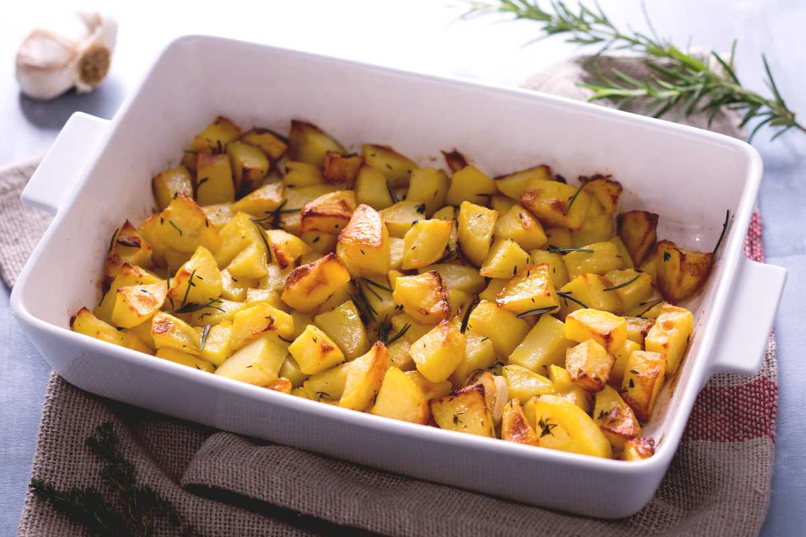

Roasted potatoes recipe
The following recipe is a translation took from GialloZafferano.

Recipe description
Simple recipe for roasted potatoes
Ingredients
- Potatoes 1kg
- Garlic 2 cloves
- Fine Salt to taste
- Rosemary 2 sprigs
- Extra virgin olive oil 30g
- Thyme 2 sprigs
For greasing the pan
- Extra virgin olive oil to taste
Preparation
- Wash and peel potatoes, divide them in half and then into quarters, finally in small cubes.
- Put a water pan to boil and boil cubes for 5 min
- Drain the cubes with a skimmer and transfer them in a bowl.
- Add thyme, oil and salt and stir.
- Preheat oven at 200 degree Celsius with inside a baking tray that will be used for potatoes.
- When desired temp is reached, extract the tray and place some oil in the bottom.
- Add the potatoes, rosemary sprigs and two cloves of garlic without peeling them.
- Bake the potatoes at 200 degree Celsius for 1 hour or until the potatoes are crispy and golden. Every 20 min mix them to assure an even cooking.
- Remove garlic, let potatoes cool a bit and serve immediately!